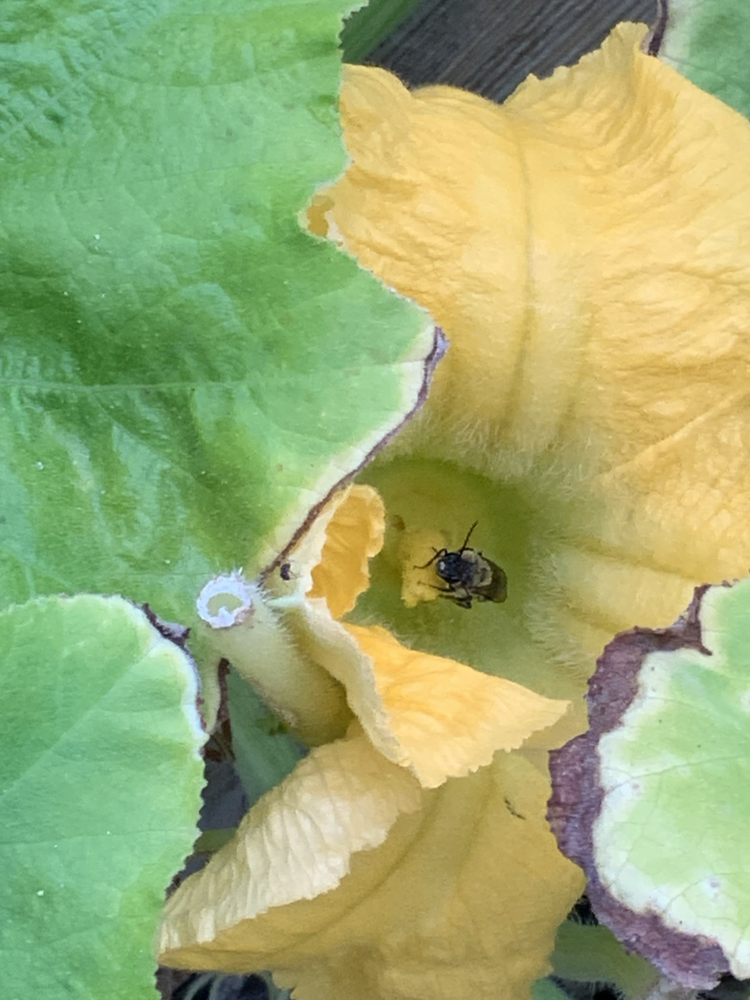
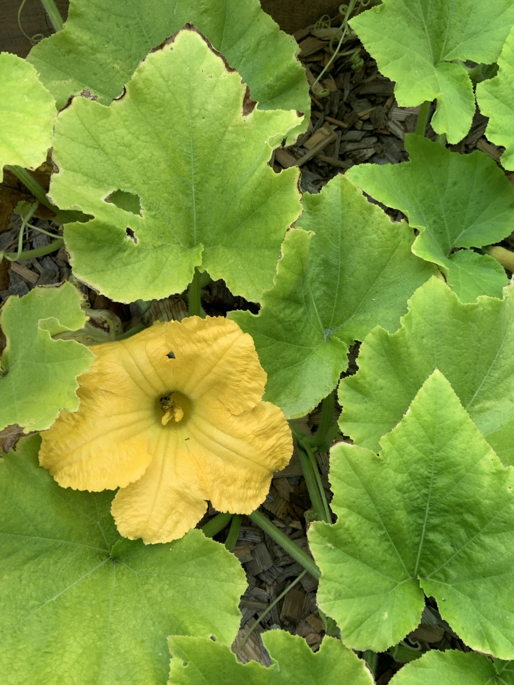

Keep flowers nearby
Marigolds, sunflowers, herbs, and perennial flowers provide nectar and pollen before and after vegetable blossoms open.
Photographs from the 2026 garden showing pollination in action.


Squash, pumpkins, cucumbers, and many melons produce separate male and female flowers. Bees carry pollen from the male flowers to the female flowers. Good pollination helps fruit begin growing evenly and reduces small fruits that yellow, shrivel, or fall from the vine.
Marigolds, sunflowers, herbs, and perennial flowers provide nectar and pollen before and after vegetable blossoms open.
Squash blossoms are most receptive early in the day, when bees are actively visiting them.
Avoid spraying open flowers or active bees. When treatment is necessary, follow the label and choose timing that minimizes pollinator exposure.
A shallow water source with stones or landing places can help bees drink without drowning.